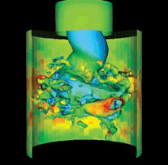

IEEE Visualization Contest 2011
Official event of the VisWeek 2011
Stability
Visualization of Fluid Dynamics
NEWS:
Congratulations to the
winning team and the honorable mention
team! Many thanks to all participants for their great
contributions.
The IEEE Visualization Contest 2011 is an official event of the
IEEE VisWeek 2011 which will be held in the Rhode Island Convention
Center,
Providence, USA
(23. - 28. October 2011).
The Vis Contest 2011 targets the field of fluid
dynamics. The goal is to
devise a visualization that allows for exploring the stability of
a fluid dynamics simulation of a pump with respect to different models of its turbulences.
The contest aims at demonstrating how novel visualization and
interaction techniques from the fore-front of scientific research
can help to solve real-world problems of high relevance - today.
Early Registration
Notification
September, 9th, 2011
Deadline
July, 31st, 2011,
23:59 PST
Contact
|
|
|
|
|
|
Web and data hosting is provided by courtesy of SDSC, TeraGrid
and Clausthal University. (c) 2010/2011 - IEEE Vis Contest 2011, Jan Klein, Gabriel Zachmann Last update March, 27th, 2012 |
|
||